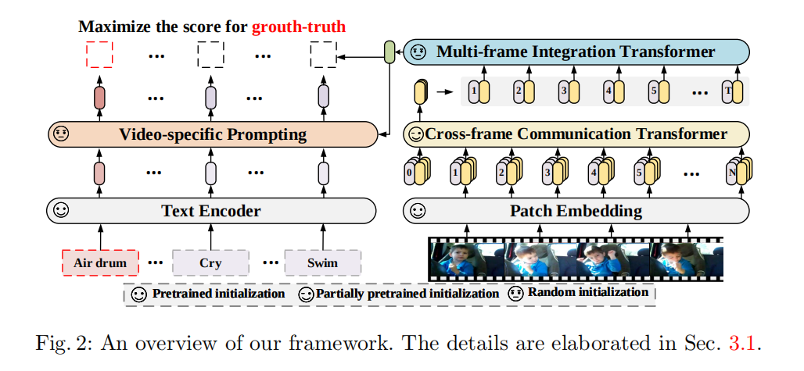
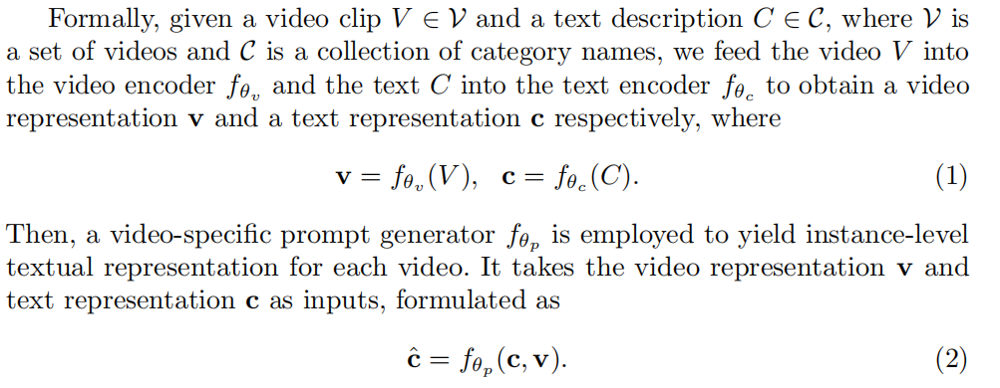
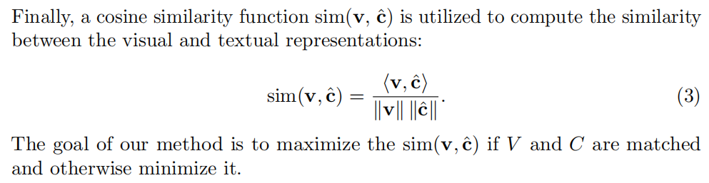
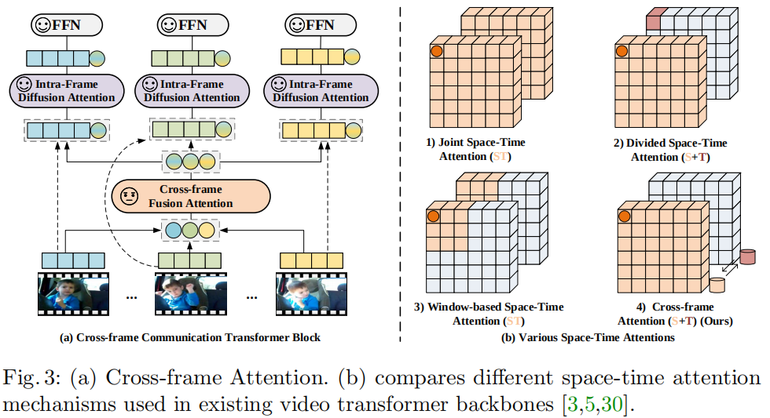
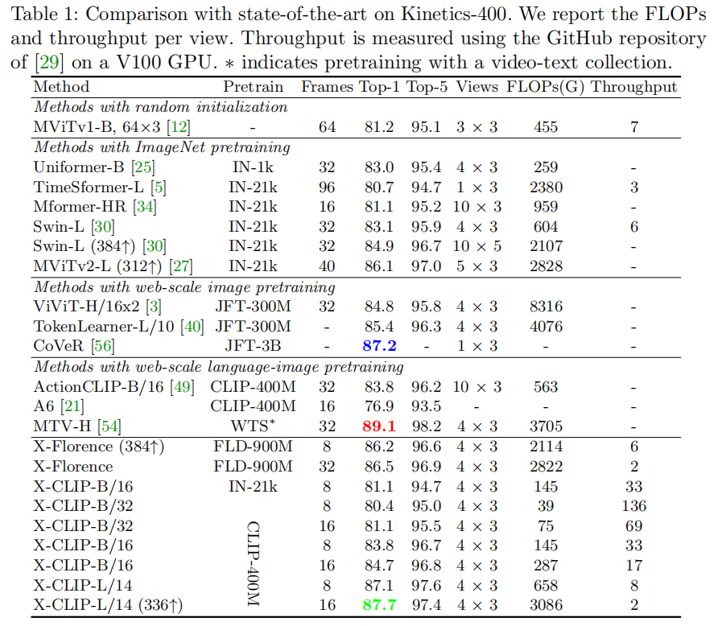
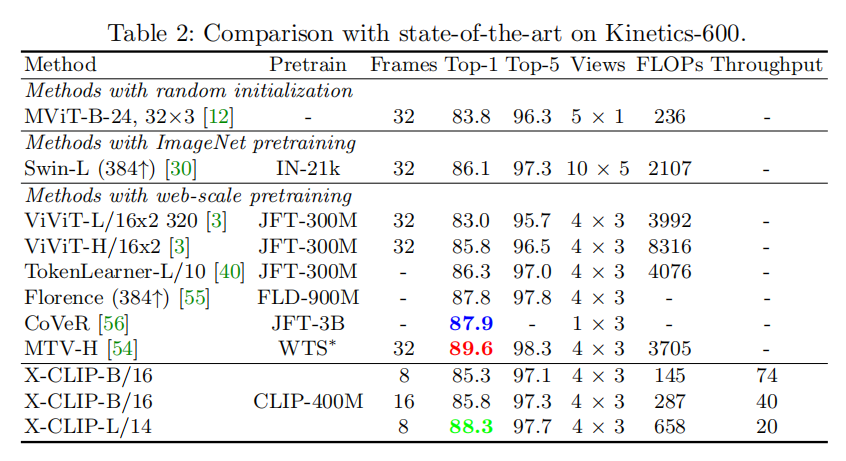
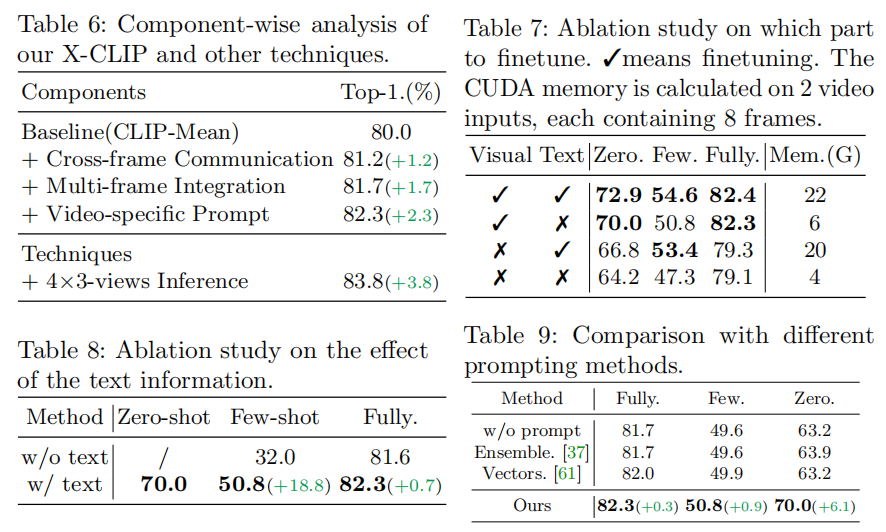

EVL算法论文阅读
论文名称：Expanding Language-Image Pretrained Models for General Video Recognition 代码仓库：论文官方GitHub仓库
Abstract
- 作者将预训练的视觉-语言模型应用视频动作识别进行探索；
- 提出了跨帧注意力(Cross Frame Attention)机制显示的交换不同帧之间的信息；
- 提出了视频相关的提示方案，利用视频内容信息产生判别性的文本提示(Prompts)。
Introduction
- 受到大尺度图像-语言预训练工作(CLIP、ALIGN等)的启发，作者提出利用文本作为监督信号，学习一个更加泛化的视频动作识别(涵盖zero-shot、few-shot、fully-supervised)；
- 考虑到直接训练video-language模型是资源消耗的，为此本文探索了适配image-language模型到视频动作识别领域；
面临的问题 1. 如何利用蕴含在视频时间维度上的信息； 2. 如何获取视频的判别性文本表征；
解决方案 1. 提出新的结构建模视频时间维度 - Cross Frame Communication Transformer - Multi-Frame Integration Transformer 2. 提出可学习的提示机制，同时利用语义标签和视频内容
Approach
整体框架图  基本流程表示   Video Encoder
采样获得的视频片段表示为V \in R^{T \times H \times W \times 3}，T表示采样的帧数。每一帧图像按照ViT的方式进行预处理，第t帧图像划分为不重叠的图像patches \{x_{t,i}\}_{i = 1}^{N} \in R ^{P^2 \times 3}，然后使用线性矩阵E \in R^{3P^2 \times D}将patches转换为patch embedding。在序列的头部附加一个可学习的embedding，称为Class Token。z_t^{(0)}表示跨帧注意力Transformer的原始输入数据，t表示第t帧图像，e^{spa}表示空间位置编码。 z_t^{(0)} = [x_{class}, Ex_{t,1}, Ex_{t,2}, \cdots, Ex_{t, N}] + e^{spa}
然后将patch embedding送入L_c层跨帧通信Transformer(Cross-frame Communication Transformer, CCT)模块，得到帧级别的特征表达h_t。 z_t^{l} = CCT^{l}(z_t^{l - 1}), l = 1, \cdots, L_c h_t = z_{t, 0}^{(L_c)} 其中，l表示CCT模块的层索引，z_{t, 0}^{L_c}表示最后一层输出的Class Token。最后，将所有帧级别的特征H = [h_1, h_2, \cdots, h_T]送入L_m层多帧聚合Transformer(Multi-frame Integration Transformer, MIT)得到视频级特征v。 v = AvgPool(MIT(H + e^{temp})) 其中，AvgPool表示平均池化，e^{temp}表示时间位置编码。 Cross Frame Attention
为了在不同帧之间进行信息交换，作者提出了两种形式的注意力机制：cross-frame fusion attention (CFA)和intra-frame diffusion attention (IFA)。同时引入message token，用于抽象发送接收信息的这一过程，其过程如下图所示。  CFA表示利用message token学习全局的时空依赖关系，其数学表达式如下： \hat{M}^{(l)} = M^{(l)} + CFA(LN(M^{(l)})) 其中\hat{M}^{(l)} = [\hat{m}_{1}^{(l)}, \hat{m}_{2}^{(l)}, \cdots, \hat{m}_{T}^{(l)}]表示每一帧图像在每一层获得的message token。IFA则表示帧内扩散过程，将全局的信息通过message token传递到每一帧内部的学习过程。 [\hat{z}_t^l, \bar{m}_t^l] = [\hat{z}_t^{l - 1}, \hat{m}_t^l] + IFA(LN([\hat{z}_t^{l - 1}, \hat{m}_t^l])) 其中，[\cdot, \cdot]表示拼接Frame tokens和Message token。最后丢弃Message token，将更新的帧tokens送入FFN层。 z_t^{l} = \hat{z}_t^{(l)} + FFN(LN(\hat{z}_t^{(l)}))
参数初始化
IFA模块参数利用预训练权重进行初始化，CFA模块则是随机初始化。 Text Encoder
对于视频描述C可以通过文本编码器获得文本表征c = f_{\theta_c}(C)，不像以往使用人工设计的提示词来强化文本描述，本文作者提出利用原始的文本描述C和可学习的文本提示方案。对于视频表征\bar{z}和文本表征c作为输入，进行自注意力建模提取与文本信息相关的视觉线索。 \bar{c} = c + MSHA(c, \bar{z}) \tilde{c} = \bar{c} + FFN(\bar{c}) 其中，\bar{z} \in R^{N \times d}表示沿着时间维度平均\{z_t^{(L_c)}\}_{t = 1}^T，\tilde{c}表示视频相关的提示内容。c作为自注意力的Query，\bar{z}作为Key和Value。增强的文本特征为\hat{c} = c + \alpha \tilde{c}，\alpha为可学习的加权参数。
Experiments
性能比较   
内容说明
本文内容主要是个人对于原始论文的理解，图片、数据等皆引用于原始论文，如有错误和意见，欢迎大家给出反馈，联系邮箱22160576@zju.edu.cn。
Bibtex
@InProceedings{XCLIP,
title={Expanding Language-Image Pretrained Models for General Video Recognition},
author={Ni, Bolin and Peng, Houwen and Chen, Minghao and Zhang, Songyang and Meng, Gaofeng and Fu, Jianlong and Xiang, Shiming and Ling, Haibin},
booktitle={European Conference on Computer Vision (ECCV)},
year={2022}
}